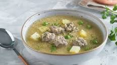
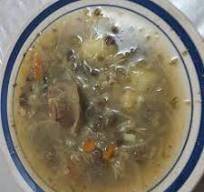
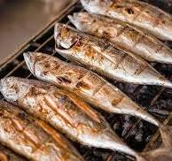
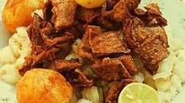

La quinua es un alimento sagrado para los pueblos andinos. Durante la Semana Santa, se consume como una opción nutritiva y saludable, ideal para el ayuno.

Este plato es reconfortante y se remonta a antiguas tradiciones andinas. Su consumo durante la Semana Santa es una forma de honrar las raíces culturales.

La cocina cruceña se caracteriza por la influencia de la gastronomía tropical. Este plato, que es ligero y sabroso, se convierte en una opción popular en la Semana Santa.

Fritanga: Este plato variado permite incluir diferentes tipos de carne, pero durante la Semana Santa, a menudo se adapta para incluir más pescado, manteniendo la tradición de abstinencia.